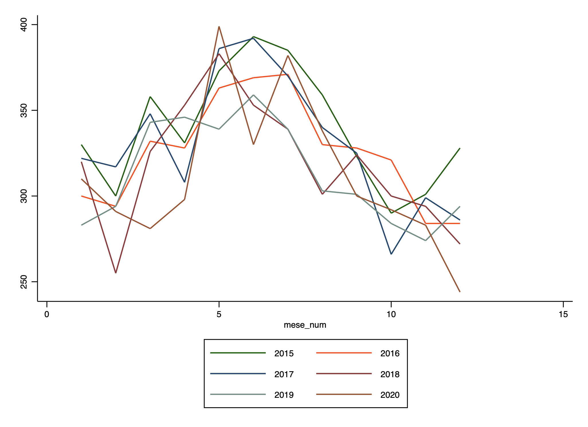
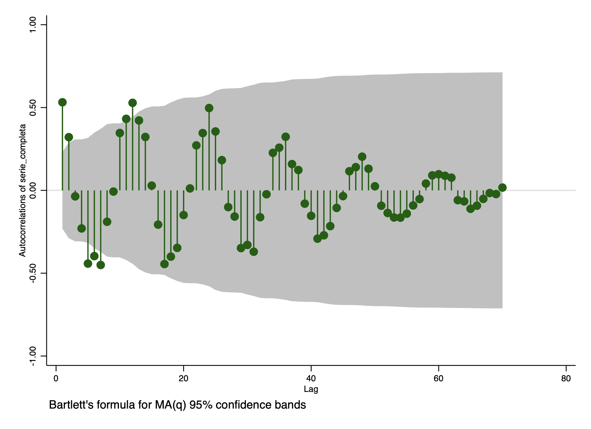

Seasonality of Suicidal Behavior
. import excel "/Users/simoneboschetti/Desktop/data.xls", sheet("Foglio1") cellrange(A15:J87) firstrow clear
(10 vars, 72 obs)
. tsset mese_num
Time variable: mese_num, 1 to 12
Delta: 1 unit
. summarize
Variable | Obs Mean Std. dev. Min Max
-------------+---------------------------------------------------------
mese_num | 12 6.5 3.605551 1 12
mese | 0
C | 12 339.25 34.16038 290 393
D | 12 325.3333 30.97017 284 371
E | 12 329.9167 39.00923 266 392
-------------+---------------------------------------------------------
F | 12 318.3333 36.29759 255 383
G | 12 313.25 29.67131 274 359
H | 12 312.3333 43.77491 244 399
serie_comp~a | 72 323.0694 35.98839 244 399
mesi_num | 72 36.5 20.92845 1 72
. correlate C D E F G H
(obs=12)
| C D E F G H
-------------+------------------------------------------------------
C | 1.0000
D | 0.8235 1.0000
E | 0.9051 0.8071 1.0000
F | 0.6775 0.8017 0.6772 1.0000
G | 0.8058 0.8175 0.7470 0.7434 1.0000
H | 0.6718 0.7986 0.7623 0.6868 0.4804 1.0000

. tsset mesi_num
Time variable: mesi_num, 1 to 72
Delta: 1 unit
